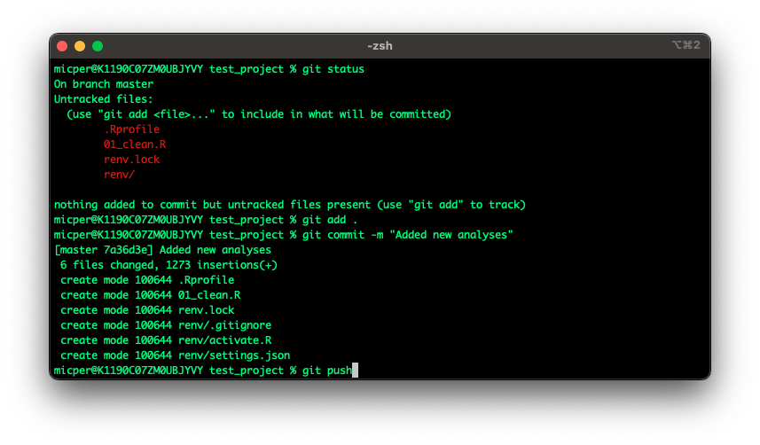

Working with git
When you have closed RStudio after your work, it’s time to push your changes to GitHub using git, so that your collaborators can see and use what you have been working on.
In the terminal, add any new files using git add ., the . here can be interpreted as “everything”. Next, it is time to give our changes a message, git commit -m "Added new analyses". Lastly, we push it to Github git push.

This is a diagram depicting a typical workflow with git. Typically, you would start your day at 1 and finish at 6.